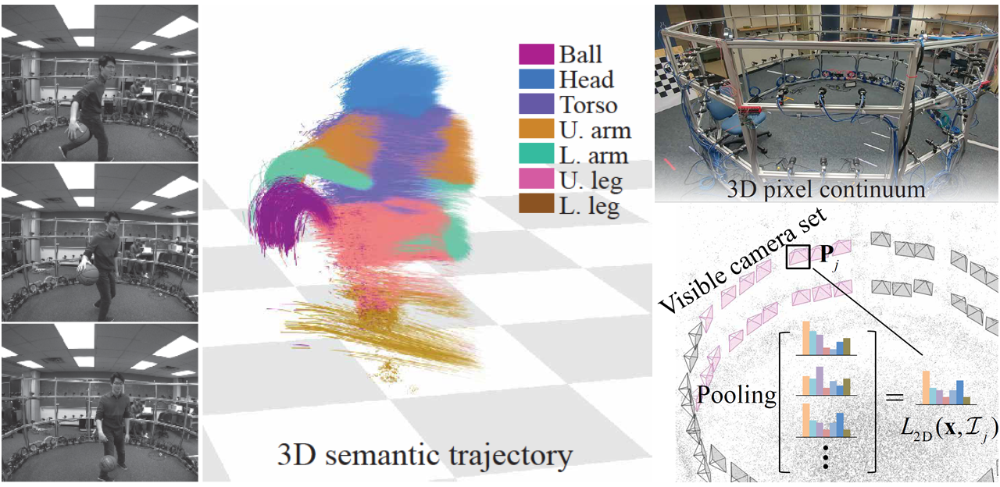

3D Semantic Trajectory Reconstruction from 3D Pixel ContinuumJae Shin Yoon, Ziwei Li and Hyun Soo Park
University of Minnesota
 Figure 1. In this paper, we present a method to precisely reconstruct dense semantic trajectories in 3D by leveraging a multicamera system that emulates the 3D pixel continuum. Each trajectory is associated with semantic labels such as body parts and objects (basketball). For illustrative purpose, the last 10 frames of trajectories are visualized. Abstract This paper presents a method to reconstruct dense semantic trajectory stream of human interactions in 3D from synchronized multiple videos. The interactions inherently introduce self-occlusion and illumination/appearance/shape changes, resulting in highly fragmented trajectory reconstruction with noisy and coarse semantic labels. Our conjecture is that among many views, there exists a set of views that can confidently recognize the visual semantic label of a 3D trajectory. We introduce a new representation called 3D semantic map---a probability distribution over the semantic labels per trajectory. We construct the 3D semantic map by reasoning about visibility and 2D recognition confidence based on view-pooling, i.e., finding the view that best represents the semantics of the trajectory. Using the 3D semantic map, we precisely infer all trajectory labels jointly by considering the affinity between long range trajectories via estimating their local rigid transformations. This inference quantitatively outperforms the baseline approaches in terms of predictive validity, representation robustness, and affinity effectiveness. We demonstrate that our algorithm can robustly compute the semantic labels of a large scale trajectory set involving real-world human interactions with object, scenes, and people. Paper Jae Shin Yoon, Ziwei Li and Hyun Soo Park "3D Semantic Trajectory Reconstruction from 3D Pixel Continuum" Conference on Computer Vision and Pattern Recognition (CVPR), 2018, [paper, slide, bib, dataset] Video video download (230 MB) Primary Contact Jae Shin Yoon: cs.umn.edu/~jsyoon |